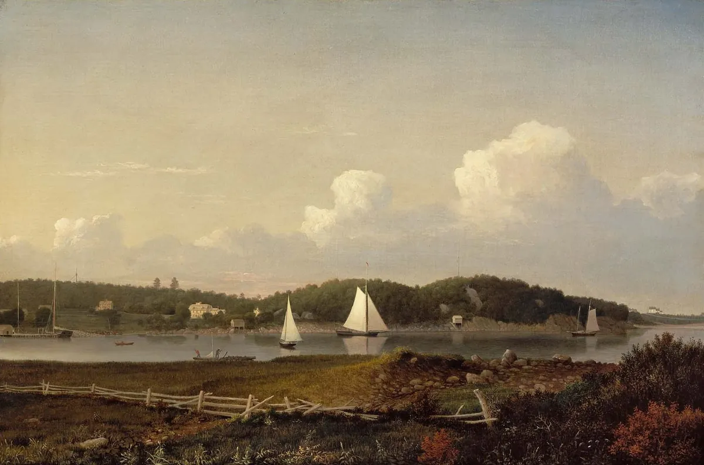

Lane & Mellen
Fresh Water Cove from Dolliver's Neck, Gloucester
Fitz Henry Lane, early 1850s

- Medium
- Oil on canvas
- Collection
- Museum of Fine Arts, Boston
- Accession no.
- 48.445
- Place
- Western shore of the outer harbor
- Record checked
- Page-verified
- Image rights
- Public-domain image
Source · note 28
Fitz Henry Lane, Fresh Water Cove from Dolliver's Neck, Gloucester, early 1850s, oil on canvas, Museum of Fine Arts, Boston, 48.445, accessed November 2026, https://mfaboston6.emuseum.com/objects/33192/fresh-water-cove-from-dollivers-neck-gloucester. Page-verified.